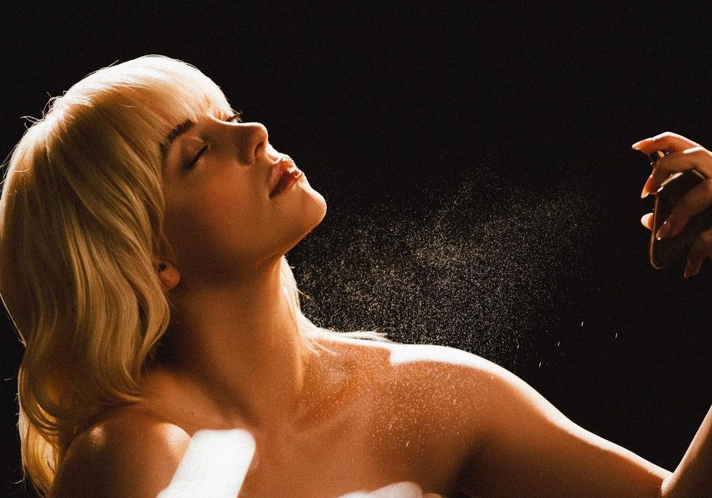
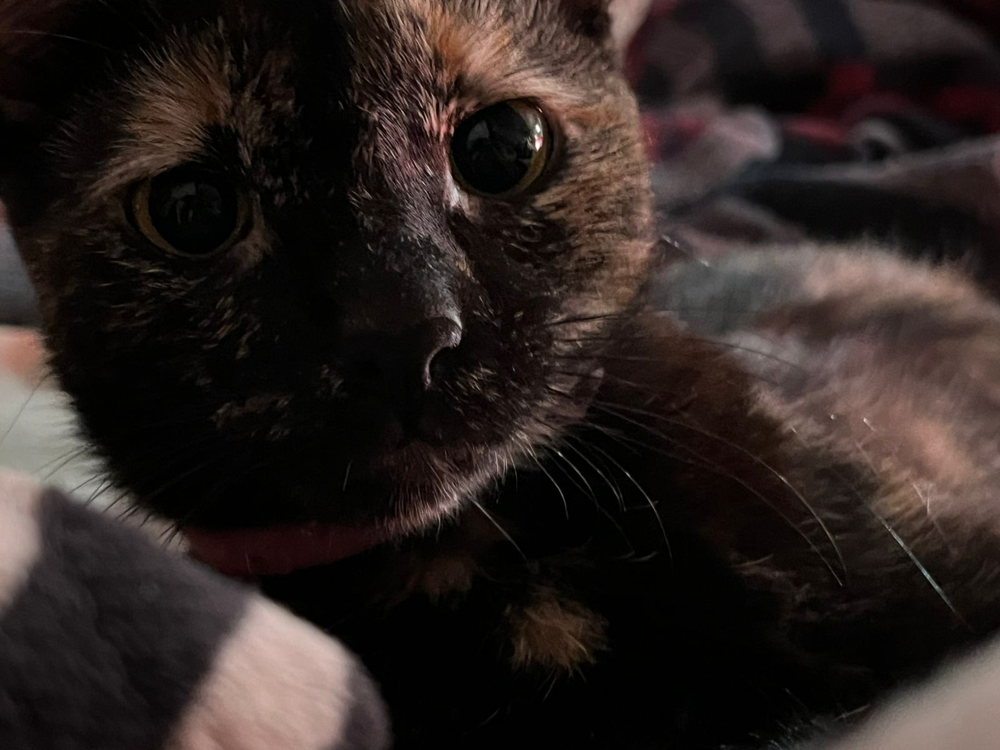

A veces siento que no soy tan detallista o que no expreso de manera adecuada todo lo que siento, pero la verdad es que hay tantas cosas que, cuando las veo, huelo o escucho, me hacen pensar en ti y en lo feliz que me haces.
Desde que me dijiste que te gustaba mucho, se me quedó tan grabado que, cada vez que veo algo relacionado con ella, un video o escucho su música, no puedo evitar pensar: "¡Faaak, cuánto me recuerda a esa cachetona hermosa!"
Ya se me quedó tan marcado tu aroma que, en ocasiones, cuando huelo algo que se le parece, incluso si es comida, me hace pensar en ti. Es un olor dulce y fresco, con algo especial que cuando me abrazas siento tan cercano. No quiero que se confunda, tu olor es único, es algo tan particular que, cuando lo percibo, me siento como si tocara la luna.

Sé lo mucho que te gustan, así que cuando veo videos de ellos, no puedo evitar mandártelos, porque me hacen recordarte a ti y a Bolillo.

Hay veces que estoy escuchando canciones y, sin pensarlo, me haces recordarte. Algunas de ellas te las dedico sin dudarlo. Si alguna vez no entiendes el porqué o tienes alguna duda, solo dime y te explico por qué te las envío.